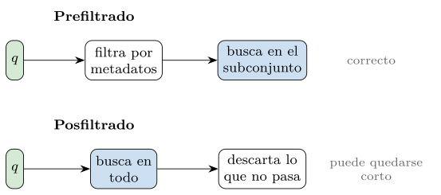
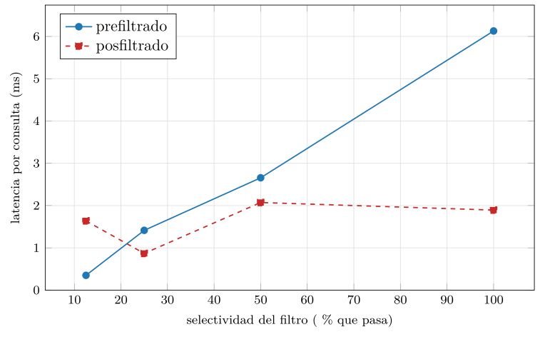
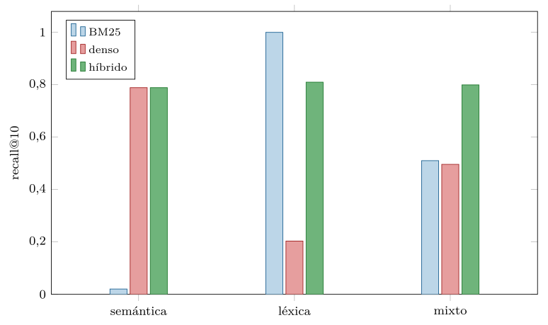
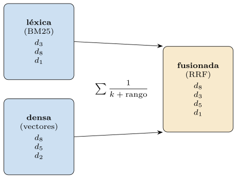
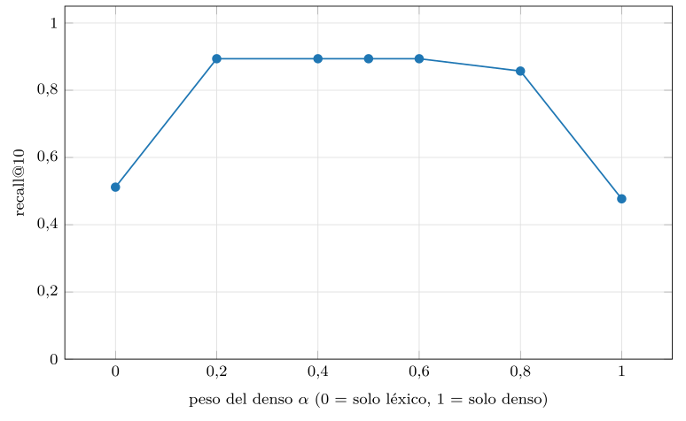
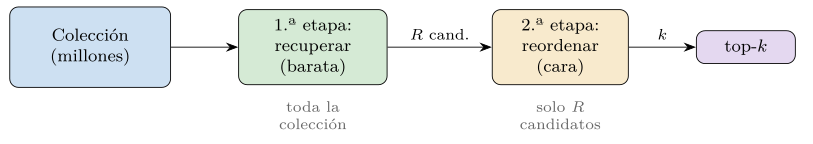
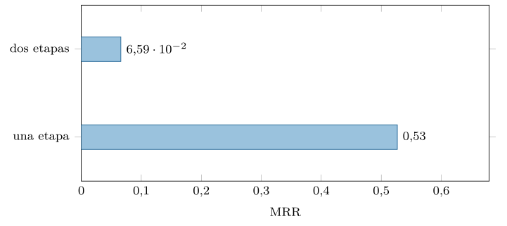
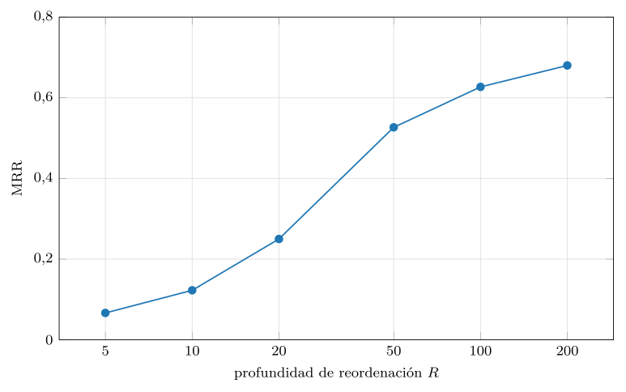

Capítulo 17. Consulta híbrida
Los tres capítulos anteriores construyeron la máquina: la geometría que define el parecido, la anatomía del almacén, los índices que escalan la búsqueda y los motores que lo encarnan. En todos ellos asomó, una y otra vez, una incomodidad: la consulta real casi nunca es «dame los más parecidos a secas». Es «dame los más parecidos que además sean de 2024», o «que contengan este código exacto», o «los más relevantes combinando lo que significan y las palabras que usan». La búsqueda de verdad mezcla señales, y este capítulo se ocupa de cómo se combinan: la consulta híbrida.
Hay dos mezclas distintas, y conviene no confundirlas. La primera combina la similitud con un filtro estructurado sobre los metadatos —similitud y una condición exacta sobre un campo—, y su reto es cuándo aplicar el filtro: antes o después de buscar. La segunda combina dos formas de medir la relevancia —la léxica, por coincidencia de términos (el BM25 del capítulo 10), y la semántica, por proximidad de vectores (los capítulos 11 y 12)—, y su reto es cómo fundir dos listas de resultados en una. A ambas se añade un patrón que las corona: la recuperación en dos etapas, que recupera barato y reordena caro. Estos tres —filtro, fusión, reordenación— son el contenido del capítulo.
Conviene situar este capítulo en el arco de la obra, porque marca un reencuentro. La primera parte del libro enseñó a buscar por coincidencia exacta: el índice invertido del capítulo 10 encontraba documentos por los términos que contenían, y BM25 los ordenaba por relevancia léxica. La tercera y la cuarta enseñaron a buscar por proximidad: el codificador producía vectores y el índice hallaba los más cercanos. Durante varios capítulos pareció que lo segundo venía a sustituir a lo primero —que la búsqueda densa, al captar el significado, dejaría obsoleta la léxica—. Este capítulo desmiente esa idea y, con ella, una tentación recurrente en tecnología: la de creer que cada avance entierra lo anterior. La búsqueda madura no elige entre términos y significado; los combina, y por eso este capítulo se titula híbrido.
Esa combinación no es un apaño, sino la forma natural de la búsqueda real. Una persona que busca rara vez está en un solo modo: quiere documentos sobre un tema (significado) que mencionen un nombre concreto (término), recientes (filtro) y ordenados por lo que de verdad responde a su necesidad (relevancia fina). Cada una de esas exigencias es una señal distinta, y servir bien la consulta es atenderlas todas a la vez. La consulta híbrida es, en el fondo, el reconocimiento de que la relevancia es multidimensional, y de que un buen buscador es el que sabe orquestar las dimensiones en vez de absolutizar una.
La tesis de fondo, que la práctica medirá, es que ninguna señal sola basta. La búsqueda léxica encuentra el término exacto pero se pierde los sinónimos; la densa capta el significado pero diluye el término raro; el filtro acota pero no ordena. La recuperación de calidad combina lo mejor de cada una, y hacerlo bien —decidir cuándo filtrar, cómo fundir, qué reordenar— es lo que separa un buscador que devuelve «cosas parecidas» de uno que devuelve lo que se buscaba. Como siempre, todo medido: el módulo construye un corpus diseñado para que léxico y denso se complementen, y mide la complementariedad, la fusión, el filtrado y la reordenación con datos reales, en una CPU normal.
Filtrado estructurado sobre el subconjunto
La forma más común de consulta híbrida combina la búsqueda por similitud con una condición sobre los metadatos: «documentos parecidos a este, de este año»; «productos afines, de esta categoría y por debajo de este precio». La parte de similitud la resuelve el índice vectorial; la condición, los metadatos. Lo delicado es cómo se juntan, y la disyuntiva —ya asomada en el capítulo 14— es cuándo aplicar el filtro respecto a la búsqueda (figura 17.1). El prefiltrado restringe primero la colección a los documentos que cumplen la condición y busca solo entre ellos; el posfiltrado busca primero por similitud y descarta después los que no cumplen.

Con búsqueda exacta, la elección es solo de coste; con un índice aproximado, se vuelve un problema genuino, como se anticipó en el capítulo 15. El posfiltrado sufre inanición: el índice devuelve sus \(k\) mejores por similitud, y si el filtro es selectivo, puede que entre esos \(k\) apenas queden los que cumplen la condición, dejando al usuario con menos resultados de los pedidos —o ninguno—. El prefiltrado evita la inanición, pero choca con que un índice aproximado no sabe buscar bien en un subconjunto arbitrario: un grafo navegable cuyos nodos válidos son una fracción pequeña queda lleno de agujeros. La práctica lo mide sobre una búsqueda densa con un filtro de año (figura 17.2 y tabla 17.1): el prefiltrado es baratísimo cuando el filtro es selectivo —si pasa poco, se busca en poco— y se encarece al pasar más; el posfiltrado tiene coste casi constante pero devuelve cada vez menos resultados al estrecharse el filtro.

src/cap17_hibrida.py.| Selectividad | Resultados posfiltrado (de \(k=10\)) |
|---|---|
| 12,5 % | \(9{,}8\) |
| 25 % | \(10{,}0\) |
| 50 % | \(10{,}0\) |
| 100 % | \(10{,}0\) |
La conclusión práctica, que los motores del capítulo 16 implementan con distinta elegancia, es que no hay una estrategia única: el motor debe decidir según la selectividad estimada del filtro. Si pasa muy poco, prefiltrar (y, si pasa poquísimo, hasta fuerza bruta sobre el subconjunto). Si pasa casi todo, posfiltrar. Y la solución más fina —la de los mejores motores— es filtrar durante la navegación del índice, saltándose los nodos que no cumplen sin abandonar el grafo. La calidad de ese planificador de filtros es, como se dijo, uno de los rasgos que más diferencia a los motores, porque la consulta con filtro es la consulta real.
Combinar señales léxica y semántica
La segunda mezcla, más profunda, combina dos maneras distintas de medir la relevancia. La léxica, del capítulo 10, puntúa por coincidencia de términos —BM25—: premia los documentos que contienen las palabras exactas de la consulta. La semántica, de los capítulos 11 y 12, puntúa por proximidad de vectores: premia los documentos cuyo significado se acerca al de la consulta, aunque no compartan ninguna palabra. No son rivales, sino complementarias, y entender por qué es la clave de toda la búsqueda moderna.
Cada señal acierta donde la otra falla
La complementariedad no es retórica: se mide. El módulo construye un corpus donde unos documentos se encuentran mejor por sus términos exactos —códigos, nombres propios, palabras raras— y otros por su significado, y lanza dos tipos de consulta: léxicas (un término raro y exacto) y semánticas (el significado de un tema, con palabras que los documentos relevantes no contienen, como haría un sinónimo). El resultado es nítido (figura 17.3). En las consultas léxicas, BM25 acierta de pleno —recall@10 de \(1{,}00\), encuentra el término exacto— mientras el denso se pierde —\(0{,}20\), diluye el documento entre sus vecinos de tema—. En las semánticas, se invierte: el denso acierta —\(0{,}79\), capta el tema— y BM25 fracasa —\(0{,}02\), no hay términos compartidos que encontrar—. Cada señal sola es excelente en su terreno y casi inútil en el ajeno.

src/cap17_hibrida.py.Aquí entra el híbrido. Combinando las dos señales, el sistema iguala a BM25 en las consultas léxicas (\(0{,}81\)), iguala al denso en las semánticas (\(0{,}79\)) y —lo decisivo— las supera a ambas en la mezcla de consultas reales: recall@10 de \(0{,}80\), frente al \(0{,}51\) de BM25 y el \(0{,}50\) del denso. La razón es la robustez: como en la práctica no se sabe de antemano si una consulta es léxica o semántica, una señal sola fallará en la mitad de los casos, mientras el híbrido acierta en ambos. No es que el híbrido sea mágico en cada consulta —en una consulta puramente léxica, BM25 solo puede igualarlo o superarlo—; es que sobre la incertidumbre de la carga real, combinar gana. Esa es la justificación de la búsqueda híbrida, y la razón de que los sistemas serios casi nunca usen una sola señal.
Conviene recordar cómo se calcula cada señal, porque la fusión opera sobre ellas. La léxica es BM25 (listado 17.1), la fórmula del capítulo 10: para cada término de la consulta presente en el documento, suma su idf —cuánto discrimina el término, alto para los raros— pesado por una frecuencia saturada y normalizada por la longitud del documento. Premia los términos raros y compartidos, y por eso clava los códigos y nombres propios. La densa es un simple producto escalar entre el vector de la consulta y los de los documentos (vectores normalizados, coseno), la operación de los capítulos 11 y 12. Dos señales, dos mundos: una cuenta palabras, la otra mide ángulos.
def bm25(consulta, k1=1.5, b=0.75):
score = np.zeros(n_docs)
for term in consulta:
if term not in df:
continue
idf = log(1 + (n_docs - df[term] + 0.5) / (df[term] + 0.5))
for i in docs_con(term):
f = tf[i][term]
score[i] += idf * f * (k1 + 1) / (f + k1 * (1 - b
+ b * long[i] / long_media))
return score
def denso(q_vec):
return vectores @ (q_vec / norm(q_vec)) # coseno: angulosListado 17.1. Las dos senales: BM25 (lexico, cuenta terminos con idf y saturacion) y la similitud densa (semantico, producto escalar de vectores normalizados).
Cómo fundir: rangos recíprocos y combinación lineal
Si hay que combinar dos listas de resultados, ¿cómo? El problema es que las puntuaciones no son comparables: un BM25 de 12 y un coseno de 0,8 viven en escalas distintas. Hay dos familias de solución. La primera, combinar las puntuaciones tras normalizarlas a un rango común y promediarlas con un peso \(\alpha\) —cero solo léxico, uno solo denso—. La segunda, más robusta, combinar los rangos en vez de las puntuaciones: la fusión de rangos recíprocos (RRF) suma, por cada documento, \(1/(k+\text{rango})\) en cada lista, de modo que un documento bien situado en ambas sube a lo alto (figura 17.4 y listado 17.2) (Cormack et al. 2009). RRF es popular porque no necesita normalizar escalas —solo usa el orden— y es notablemente estable.
Un ejemplo con números aclara la mecánica. Supongamos que un documento queda en el puesto 1 de la lista léxica y en el 10 de la densa, y otro en el puesto 3 de la léxica y el 2 de la densa, con \(k=60\). El primero suma \(1/(60+0)+1/(60+9)=0{,}0167+0{,}0145=0{,}0312\); el segundo, \(1/(60+2)+1/(60+1)=0{,}0161+0{,}0164=0{,}0325\). Gana el segundo: estar razonablemente bien en ambas listas bate a estar primero en una y mediocre en la otra. Esa es la virtud de RRF —premia el consenso entre señales— y la razón de que la constante \(k\) amortigüe los primeros puestos: con \(k\) grande, la diferencia entre el puesto 1 y el 3 pesa poco, y lo que cuenta es aparecer en ambas listas. Subir o bajar \(k\) regula cuánto premia el consenso frente a la excelencia en una sola señal.

def rrf(scores, k=60, top=100):
fus = np.zeros(len(scores[0]))
for s in scores: # una lista por senal
orden = np.argsort(-s)
orden = orden[s[orden] > 0][:top] # solo candidatos reales
for rango, doc in enumerate(orden):
fus[doc] += 1.0 / (k + rango)
return fusListado 17.2. Fusion de rangos reciprocos (RRF) sobre las listas top-K de cada senal: cada documento suma 1/(k+rango) por la lista en que aparece.
¿Cuánto importa el peso de la fusión? La práctica barre el \(\alpha\) de la combinación lineal sobre una carga mixta y dibuja una clara U invertida (figura 17.5): con solo léxico (\(\alpha=0\)) el recall es \(0{,}51\), con solo denso (\(\alpha=1\)) es \(0{,}48\), y en el medio —combinando— sube hasta \(0{,}89\). La ganancia de fusionar es enorme y robusta: cualquier peso intermedio bate con holgura a las dos señales puras. No hay que afinar el peso al milímetro —toda la zona central funciona—, lo que explica por qué la fusión es una victoria fácil: casi cualquier forma sensata de combinar mejora a usar una sola señal.

src/cap17_hibrida.py.Recuperación en dos etapas
El tercer ingrediente de la búsqueda moderna es un patrón de arquitectura, no una señal: la recuperación en dos etapas (figura 17.6). La idea nace de un compromiso ya conocido: los métodos más precisos para juzgar la relevancia de un documento son también los más caros, demasiado para aplicarlos a toda la colección. La solución es dividir el trabajo. Una primera etapa barata —la recuperación densa o híbrida que venimos viendo— recorre toda la colección y recupera un conjunto amplio de candidatos, digamos unos cientos. Una segunda etapa cara y precisa —un reordenador— examina solo ese puñado y lo reordena con finura. Se paga el método caro únicamente sobre los candidatos, no sobre los millones.

El reordenador: el cross-encoder
El reordenador por excelencia es el cross-encoder (Nogueira y Cho 2019). A diferencia del codificador de los capítulos 11 y 12 —que produce el vector de la consulta y el del documento por separado, y los compara con un coseno (un bi-encoder)—, el cross-encoder mete la consulta y el documento juntos en el modelo, que los lee a la vez y emite una puntuación de relevancia. Al ver ambos textos simultáneamente, capta interacciones finas —qué término de la consulta corresponde a qué parte del documento— que el coseno de dos vectores independientes difumina. Es mucho más preciso y mucho más caro: hay que pasar el modelo una vez por cada par consulta-documento, lo que es inviable para millones pero perfecto para los cientos de candidatos de la primera etapa.
La práctica mide la ganancia (tabla 17.7). Sobre consultas que buscan un documento concreto, la recuperación densa de una sola etapa lo deja en un MRR pobre —\(0{,}07\): el documento correcto queda enterrado entre sus vecinos de tema—; reordenar los cincuenta primeros candidatos con un reordenador más preciso —que aquí combina la señal fina léxica con la densa, simulando lo que un cross-encoder haría— sube el MRR a \(0{,}53\), casi ocho veces mejor. La reordenación rescata el documento correcto que la primera etapa había recuperado pero mal ordenado.

src/cap17_hibrida.py.Entre el bi-encoder barato y el cross-encoder caro hay un punto intermedio que conviene conocer: la interacción tardía de ColBERT, ya vista en los capítulos 12 y 14 (Khattab y Zaharia 2020). Recordemos el espectro. El bi-encoder reduce cada texto a un vector y compara con un coseno: baratísimo, indexable, pero pierde el detalle al comprimir todo en un punto. El cross-encoder no comprime nada —lee los dos textos juntos— pero por eso no se puede precomputar ni indexar: hay que evaluarlo en consulta, par a par. La interacción tardía se queda en medio: representa cada texto por varios vectores (uno por token) y los compara con MaxSim, capturando interacciones a nivel de token sin tener que leer los textos juntos en consulta, de modo que parte del trabajo se puede precomputar e indexar.
Esto da un espectro de coste y precisión que el diseñador recorre según el caso: bi-encoder para la primera etapa a gran escala (barato, recall alto), interacción tardía como reordenador intermedio o incluso primera etapa de alta calidad, y cross-encoder como reordenador final sobre pocos candidatos (caro, máxima precisión). La recuperación moderna combina a menudo varios de estos peldaños: un bi-encoder recupera, un ColBERT afina, un cross-encoder pule el top. Cada uno paga su coste donde aporta más valor, la misma filosofía de la cuantización y la reordenación que recorre la cuarta parte: la herramienta cara, solo donde cambia el resultado.
Cuántos candidatos reordenar, y más allá de dos señales
¿Cuántos candidatos conviene pasar a la segunda etapa? Más candidatos dan más posibilidades de que el documento correcto esté entre ellos para ser rescatado, pero cuestan más reordenación. La práctica lo mide (figura 17.8): el MRR sube deprisa al aumentar la profundidad \(R\) —de \(0{,}07\) con cinco candidatos a \(0{,}68\) con doscientos— pero con rendimientos decrecientes: la curva se aplana. La lección de diseño es que existe un punto dulce —unas decenas o pocos cientos de candidatos— más allá del cual reordenar más apenas mejora la calidad y solo añade coste. Ese punto, como el nprobe de IVF o el ef de HNSW, es un mando del compromiso calidad-coste que se ajusta al caso.

src/cap17_hibrida.py.Hemos hablado de dos señales —léxica y densa— pero la fusión no se detiene ahí: un buscador real suele combinar varias, y la maquinaria de la fusión las admite sin cambios. Junto a la relevancia textual, los sistemas reales fusionan señales de negocio y de contexto: la frescura (un documento reciente puede valer más que uno antiguo igual de relevante), la popularidad o autoridad (un producto muy vendido, una página muy enlazada), la personalización (lo que este usuario ha visto o comprado), y hasta señales de calidad (la longitud, la completitud, la reputación de la fuente). Cada una es otra lista ordenada que entra en la fusión.
La fusión de rangos recíprocos se generaliza sin esfuerzo a \(m\) señales —suma \(1/(k+\text{rango})\) sobre todas las listas—, y la combinación lineal, a \(m\) pesos. El reto deja de ser técnico y se vuelve de diseño: qué señales incluir y con qué peso, una decisión que mezcla relevancia, objetivos de negocio y, a menudo, aprendizaje —los sistemas más sofisticados aprenden los pesos de la fusión a partir de datos de interacción, lo que se conoce como learning to rank—. Pero la idea de fondo no cambia respecto a las dos señales de este capítulo: cada señal aporta una vista parcial, ninguna basta sola, y combinarlas con criterio bate a cualquiera. La consulta híbrida es, en su forma madura, una orquesta de señales, y el recuperador, su director.
La tubería completa: filtrar, recuperar, fusionar, reordenar
Los tres ingredientes —filtro, fusión, reordenación— rara vez se usan por separado: se encadenan en una tubería de recuperación, y el orden en que se aplican importa. La secuencia habitual de un buscador serio es esta (listado 17.3): primero filtrar por los metadatos para acotar la colección al subconjunto admisible; después recuperar candidatos en paralelo por la señal léxica y la densa sobre ese subconjunto; luego fusionar las dos listas en una; y, por último, reordenar los primeros con un cross-encoder para afinar el top que verá el usuario. Cada etapa estrecha y mejora: el filtro reduce el espacio, la recuperación trae lo prometedor, la fusión combina las señales, la reordenación pule el orden final.
def buscar_hibrido(consulta, filtro, k=10, R=100):
sub = aplicar_filtro(filtro) # 1. filtrar (metadatos)
sb = bm25(consulta.texto, sub) # 2. recuperar: lexico
sd = denso(consulta.vector, sub) # recuperar: semantico
fus = rrf([sb, sd]) # 3. fusionar (RRF)
cand = top(fus, R) # candidatos de primera etapa
return cross_encoder(consulta, cand)[:k] # 4. reordenar y devolver kListado 17.3. La tuberia de recuperacion hibrida: filtrar, recuperar por dos senales, fusionar y reordenar. Cada etapa estrecha y mejora el resultado.
¿Por qué este orden y no otro? El filtro va primero porque acotar barato reduce el trabajo de todo lo que sigue. La fusión va antes que la reordenación porque combinar las dos señales produce un conjunto de candidatos más completo —con los aciertos léxicos y los semánticos— que cualquiera de las dos sola, y un cross-encoder solo puede reordenar lo que la primera etapa le pasa: si un documento relevante no está entre los candidatos, ninguna reordenación lo rescata. De ahí una regla de oro: la primera etapa decide el techo de recall —no puede recuperarse lo que no se recuperó— y la reordenación decide la precisión dentro de ese techo. Por eso se invierte tanto esfuerzo en que la primera etapa, híbrida, tenga buen recall: es la condición de todo lo demás.
Esta estructura por etapas tiene, además, una virtud operativa: cada etapa se puede optimizar y depurar por separado. Si la calidad final flojea, se diagnostica por partes: ¿es que la primera etapa no trae el documento relevante (problema de recall, se mejora la recuperación o la fusión) o es que lo trae pero la reordenación lo coloca mal (problema de precisión, se mejora el reordenador)? Esa separación de responsabilidades —recall arriba, precisión abajo— convierte un sistema opaco en uno diagnosticable, y es una de las razones por las que el patrón de dos etapas se ha impuesto: no solo da mejor calidad, sino que es más fácil de entender y arreglar. Una tubería bien estructurada es, como un buen programa, una en la que se puede localizar el fallo.
La tubería tiene varios mandos, y ajustarlos es parte del oficio. Conviene recorrerlos, porque cada uno mueve un compromiso distinto. El peso de la fusión —cuánto pesa lo léxico frente a lo denso— depende del dominio: en la búsqueda de código, lo léxico manda; en la conversacional, lo denso; la práctica mostró que la zona central es robusta, así que no hay que afinarlo al milímetro, pero sí orientarlo al caso. La profundidad de recuperación de la primera etapa fija el techo de recall: más candidatos, más posibilidades de no dejarse nada, a más coste de fusión y reordenación. La profundidad de reordenación \(R\) —cuántos candidatos pasan al cross-encoder— equilibra calidad y coste, con el punto de rendimientos decrecientes que medimos. Y la estrategia de filtro —prefiltrar, posfiltrar, filtrar durante la navegación— se elige por la selectividad.
La clave de calibrar bien es no hacerlo a ciegas: se ajusta midiendo sobre un conjunto de consultas de prueba con relevancia conocida, observando cómo cambia la métrica adecuada —recall@k para la primera etapa, nDCG o MRR para el orden final— al mover cada mando. Es la misma disciplina de los índices del capítulo 15 —barrer un parámetro y mirar la curva— aplicada a la tubería entera. Y conviene calibrar de fuera hacia dentro: primero asegurar que la primera etapa tiene buen recall (sin ella, nada se arregla aguas abajo), luego afinar la fusión, y por último la reordenación. Calibrar una tubería de recuperación es, en el fondo, una sucesión de los compromisos recall-coste que recorren toda la cuarta parte, ahora encadenados.
La consulta híbrida y la generación aumentada
El consumidor más voraz de la consulta híbrida es, hoy, la generación aumentada por recuperación (RAG), el patrón que conecta un motor de búsqueda con un gran modelo de lenguaje, y conviene ver cómo encaja porque es lo que ha disparado todo el campo. En un RAG, la pregunta del usuario se convierte en una consulta a la base vectorial; los fragmentos recuperados se entregan, como contexto, al modelo generador, que redacta la respuesta apoyándose en ellos. La calidad de la respuesta depende críticamente de la calidad de la recuperación: si los fragmentos pertinentes no se recuperan, el modelo no puede usarlos, y o bien responde mal, o bien alucina —inventa— para rellenar el hueco.
Por eso el RAG hereda, y agudiza, todo lo de este capítulo. El filtro aplica los permisos —un usuario no debe recibir como contexto un documento que no puede ver— y el alcance —solo de esta fecha, de este producto—. La fusión léxico-densa importa especialmente porque las preguntas reales mezclan significado y términos exactos: «¿qué dice la cláusula 7.3 sobre la rescisión?» necesita el término exacto (léxico) y el concepto (denso). Y la reordenación es casi obligada, porque el modelo generador solo lee unos pocos fragmentos —su ventana es limitada y los primeros pesan más—, así que conviene que los mejores estén arriba del todo, justo lo que el cross-encoder asegura. Hay un matiz que el capítulo 15 ya apuntó: en un RAG, la métrica que de verdad importa no es el recall del índice, sino si los fragmentos recuperados bastan para responder bien. Optimizar la recuperación híbrida es necesario, pero el juez último es la respuesta generada, no una cifra de recall aislada.
El flujo completo de un RAG con recuperación híbrida cabe en unas líneas (listado 17.4), y reúne todo el capítulo: se codifica la pregunta, se recupera con la tubería híbrida —filtro de permisos, fusión, reordenación—, se ensambla el contexto con los mejores fragmentos y se pasa al modelo generador. Cada pieza del capítulo es una línea de este flujo, y la calidad de la respuesta final es tan buena como la más débil de ellas.
def responder(pregunta, usuario):
q = codificar(pregunta) # texto -> vector (cap. 12)
permiso = lambda m: m["nivel"] <= usuario.nivel
frag = buscar_hibrido(Consulta(pregunta, q), permiso, k=5) # tuberia
contexto = "\n".join(f.texto for f in frag)
return generar(f"Contexto:\n{contexto}\n\nPregunta: {pregunta}")
# la respuesta es tan buena como la mas debil de sus piezasListado 17.4. Un RAG con recuperacion hibrida: codificar la pregunta, recuperar con la tuberia (filtro, fusion, reordenacion), ensamblar el contexto y generar.
Evaluar la recuperación
Todo el capítulo ha hablado de «calidad» apoyándose en medidas —recall@k, MRR— que conviene formalizar, porque sin una vara no hay forma de comparar configuraciones híbridas (y el capítulo 18 las retomará para el sistema entero). La medida más simple es el recall@k: de los documentos relevantes, qué fracción aparece entre los \(k\) primeros. Mide exhaustividad —¿están los buenos?— pero ignora el orden dentro del top. Su pareja es la precisión@k: de los \(k\) devueltos, qué fracción son relevantes.
Cuando el orden importa —y casi siempre importa, porque el usuario mira primero los primeros— se usan medidas sensibles al rango. El MRR (mean reciprocal rank) premia que el primer resultado relevante aparezca pronto: es \(1/\text{posición}\) del primer acierto, promediado sobre las consultas; ideal cuando se busca un documento concreto, como en las consultas léxicas de este capítulo. El nDCG (normalized discounted cumulative gain) (Järvelin y Kekäläinen 2002) es más completo: suma la relevancia de cada resultado descontada por su posición —un acierto en el puesto uno vale más que en el diez— y lo normaliza contra el orden ideal; es la medida de referencia cuando hay grados de relevancia y el orden completo del top importa.
Conviene ver las medidas con números, sobre un ejemplo diminuto. Supongamos una consulta con tres documentos relevantes, y que el sistema devuelve diez resultados en los que los relevantes caen en las posiciones 1, 4 y 8. El recall@10 es \(3/3=1{,}0\) —están los tres entre los diez—; el recall@3, en cambio, es \(1/3\approx0{,}33\) —solo uno entró en los tres primeros—. La precisión@3 es \(1/3\) —de los tres devueltos, uno es relevante—. El MRR mira el primer acierto: está en la posición 1, así que \(1/1=1{,}0\). El nDCG@10 suma la relevancia de cada acierto descontada por el logaritmo de su posición —el de la posición 1 vale más que el de la 4, y este más que el de la 8— y lo normaliza contra el orden ideal (los tres relevantes en las posiciones 1, 2, 3); sale un valor alto pero no perfecto, porque dos relevantes están más abajo de lo ideal. Cada medida cuenta una historia distinta: el recall@10 dice «están todos», el MRR dice «el primero acierta», el nDCG dice «el orden es bueno pero mejorable». Elegir la medida es elegir qué historia importa.
La elección de medida no es neutra: el recall@k juzga la primera etapa (¿trae los buenos?), el MRR y el nDCG juzgan el orden final (¿los pone arriba?), que es lo que la reordenación mejora. Medir la consulta híbrida con la métrica adecuada al caso —y sobre las propias consultas, no un benchmark ajeno— es la única forma de saber si una configuración es mejor que otra, y no una cuestión de fe.
Casos de diseño
Conviene aterrizar el capítulo en decisiones concretas, porque «¿qué tubería monto?» es la pregunta práctica, y la respuesta depende del caso.
Comercio electrónico y bases de conocimiento
Un buscador de productos combina, casi de manual, todas las piezas. El usuario escribe «zapatillas rojas impermeables talla 42 por menos de 80 euros»: el color, la talla y el precio son filtros estructurados (prefiltrado, son muy selectivos); «zapatillas impermeables» es señal mixta —el término exacto importa (léxico) y el concepto también (denso)—, así que fusión; y como el catálogo es enorme y la primera página lo es todo, una reordenación final por relevancia comercial (que combina similitud, popularidad y margen). Es la tubería completa, con cada pieza justificada por una parte de la consulta. La lección: en el comercio, la consulta real mezcla atributos duros, términos y significado, y solo la híbrida los sirve todos.
Un asistente de IA sobre la documentación de una empresa prioriza el recall —no puede dejarse fuera el fragmento que contiene la respuesta— y la precisión del top —el modelo generador solo leerá los primeros—. La tubería: filtro por permisos del usuario (obligatorio), recuperación híbrida con peso hacia lo semántico (las preguntas son conceptuales), y reordenación con cross-encoder generosa (profundidad \(R\) alta, porque acertar el fragmento importa más que el coste). La lección: cuando una respuesta depende de la recuperación, se invierte en recall en la primera etapa y en precisión en la reordenación.
Búsqueda conversacional y de código fuente
Un cuarto caso, cada vez más común, es la búsqueda conversacional: el usuario no escribe palabras clave sino una pregunta en lenguaje natural, a veces larga y con contexto de turnos anteriores. Aquí la señal densa domina —la pregunta es semántica, y rara vez comparte los términos exactos del documento que la responde—, pero lo léxico sigue importando para los nombres propios, las cifras y los términos técnicos que la pregunta mencione. La particularidad es el contexto conversacional: la consulta efectiva no es solo la última pregunta, sino la última pregunta interpretada a la luz de las anteriores («¿y en 2023?» no significa nada sin el turno previo), lo que obliga a una etapa de reescritura de la consulta antes de recuperar. Y, como casi siempre alimenta a un modelo generador (un RAG conversacional), la reordenación importa mucho: los pocos fragmentos que el modelo leerá deben ser los mejores. La tubería: reescribir la consulta con el contexto, recuperación híbrida con peso denso, reordenación cuidada. La lección: cuando la consulta es una conversación, hay que entenderla antes de buscarla, y la recuperación es solo un eslabón de una cadena que empieza en el lenguaje y termina en una respuesta.
Buscar en un repositorio de código invierte los pesos: el término exacto —un nombre de función, una variable, un mensaje de error— pesa muchísimo (léxico fuerte), mientras que la similitud semántica ayuda a encontrar «código que hace algo parecido». La tubería pesa hacia BM25, con el denso como complemento, y los filtros —lenguaje, repositorio, ruta— son estructurados. La lección: no hay una receta única; el peso de cada señal se ajusta a qué clase de coincidencia importa en el dominio, y en el código manda lo léxico.
Errores comunes
La consulta híbrida acumula varios tropiezos recurrentes que conviene reconocer. El primero es usar una sola señal por inercia —solo densa, porque «es lo moderno», o solo léxica, porque «es lo de siempre»— renunciando a la mitad de las consultas que la otra señal habría resuelto; la figura 17.3 es el argumento contra esa pereza. El segundo es posfiltrar sin darse cuenta, dejando que un filtro selectivo vacíe los resultados, el problema de la inanición que la tabla 17.1 cuantificó.
El tercero es normalizar mal al fundir: combinar un BM25 y un coseno sumándolos sin normalizar las escalas, de modo que una señal aplasta a la otra; usar RRF —que solo mira rangos— lo evita de raíz. El cuarto es reordenar demasiado poco o demasiado: una profundidad \(R\) minúscula deja fuera el documento que el cross-encoder habría rescatado, y una desmesurada quema cómputo sin ganancia, como mostró la figura 17.8. El quinto es olvidar que la primera etapa fija el techo: invertir todo el esfuerzo en un reordenador excelente sobre una primera etapa mediocre, cuando ninguna reordenación recupera lo que no se recuperó. Y el sexto, propio del RAG, es medir el recall y no la respuesta: optimizar una cifra de recuperación que no se traduce en mejores respuestas generadas. Cada error, como en los capítulos anteriores, es la otra cara de una de las lecciones del capítulo dada por supuesta.
Más allá del texto: modalidades y agentes
La fusión que hemos visto entre léxico y denso es un caso de algo más general: combinar señales de distinta naturaleza, y la consulta híbrida se extiende con naturalidad a las modalidades del capítulo 12. Un buscador de productos puede combinar la similitud del texto de la descripción, la de la imagen del producto y la coincidencia léxica del nombre; un buscador de documentos, el texto y las tablas o figuras que contienen. Cada modalidad —texto, imagen, audio— produce su propia señal de relevancia, y la maquinaria de la fusión las combina igual que combina léxico y denso: dos (o más) listas ordenadas que se funden en una.
Hay dos formas de hacerlo, eco de la elección métrica del capítulo 13. La primera, un espacio compartido: un modelo multimodal (como los del capítulo 12) coloca texto e imagen en el mismo espacio vectorial, de modo que una consulta de texto recupera imágenes directamente por coseno —una sola señal densa que ya es multimodal—. La segunda, fusionar señales separadas: una búsqueda por la modalidad texto, otra por la imagen, y RRF para combinarlas. La elección depende de si se dispone de un buen modelo de espacio compartido y de cuánto control se quiere sobre el peso de cada modalidad. En cualquier caso, la lección del capítulo se mantiene intacta: ninguna señal —ni léxica, ni densa, ni de una sola modalidad— basta por sí sola, y la recuperación de calidad orquesta varias. La consulta híbrida es, en su forma más amplia, el arte de combinar todas las pistas disponibles sobre qué es relevante.
Conviene asomarse a hacia dónde evoluciona la consulta híbrida, porque la dirección ya se intuye y reordena las piezas de este capítulo. El patrón RAG que hemos descrito —recuperar una vez, generar una vez— es la forma más simple, y está dando paso a esquemas más ricos en los que el modelo de lenguaje no es un consumidor pasivo de la recuperación, sino un agente que la dirige. En la recuperación agéntica, el modelo decide cuándo buscar, reformula la consulta a la vista de lo que va encontrando, lanza varias búsquedas sucesivas —refinando la pregunta en cada paso— y combina lo recuperado de fuentes distintas antes de responder. La búsqueda deja de ser un acto único y se vuelve un bucle de consulta, lectura y reconsulta.
Eso no invalida nada de este capítulo; lo multiplica. Cada una de esas búsquedas sucesivas es una consulta híbrida —con su filtro, su fusión, su reordenación—, y ahora hay además una capa de orquestación que decide qué buscar y cuándo parar. La reescritura de la consulta, que vimos en el caso conversacional, se vuelve central: el agente reformula constantemente. La calidad de cada recuperación sigue importando —un eslabón débil arruina el bucle entero— pero se añade la calidad de la estrategia de búsqueda. La descomposición de una pregunta compleja en sub-preguntas, cada una resuelta con su consulta híbrida, es la frontera de la recuperación actual.
La lección, que cierra la mirada al futuro, es que las piezas de este capítulo —combinar señales, filtrar, reordenar, medir— no caducan con los agentes, sino que se convierten en los ladrillos de sistemas más elaborados. Igual que la búsqueda híbrida integró lo léxico y lo denso sin descartar ninguno, la recuperación agéntica integra la consulta híbrida sin sustituirla: la envuelve en un bucle más inteligente. El que entienda la consulta híbrida —el qué y el cómo de combinar señales— tendrá los cimientos para entender lo que venga, porque lo que venga se construirá sobre ella. La recuperación de información no deja de reinventarse, pero lo hace, fiel al espíritu del libro, acumulando.
Nota histórica: de lo disperso a lo híbrido
La búsqueda híbrida es, en cierto modo, una reconciliación tras décadas de péndulo. Durante mucho tiempo, la recuperación de información fue léxica: el modelo del espacio vectorial disperso, TF-IDF y BM25 (el capítulo 10), reinaron desde los años setenta y dieron los buscadores de texto que cambiaron el mundo. BM25, en particular, resultó tan robusto que sigue siendo, décadas después, una referencia dificilísima de batir, y un componente de casi todo sistema serio.
La irrupción de la recuperación densa —con los embeddings de los capítulos 11 y 12, y trabajos como DPR (Karpukhin et al. 2020) hacia 2020— prometió superar lo léxico captando el significado, y por un momento pareció que lo dispersó quedaría obsoleto. Pero la práctica mostró lo que este capítulo ha medido: la densa gana en unas consultas y pierde en otras, y BM25 seguía siendo imbatible en las de término exacto. El péndulo no se quedó en ningún extremo. La síntesis —la búsqueda híbrida, que fusiona ambas y reordena con cross-encoders (Nogueira y Cho 2019)— se impuso como el estado del arte, no por moda sino por la evidencia acumulada de que combinar bate a cualquier señal sola.
La lección histórica es serena y vale para más que la búsqueda: lo nuevo rara vez borra lo viejo, lo integra. La recuperación moderna no es «densa en lugar de léxica», sino «léxica y densa y reordenación», cada pieza aportando lo que sabe. Es la misma moraleja que cerró el capítulo 16 sobre los motores, y la que recorre todo el libro: del igual al cercano no se llega borrando el igual, sino sumándole el cercano. La búsqueda híbrida es esa suma hecha sistema.
Conviene extraer de esta historia una advertencia para el practicante, porque el péndulo no ha dejado de oscilar. Cada pocos años, una técnica nueva —ayer la densa, hoy los grandes modelos generativos, mañana lo que sea— se anuncia como el final de todo lo anterior, y la tentación de tirar lo que funciona para abrazar lo nuevo es fuerte. La lección serena de la recuperación de información, disciplina con medio siglo de cicatrices, es que los anuncios de obsolescencia casi siempre exageran: BM25 ha sobrevivido a varias revoluciones que prometían enterrarlo, y sigue ahí, en el corazón de los sistemas híbridos más modernos. La actitud sabia no es ni el rechazo a lo nuevo ni el abandono de lo viejo, sino la medida: probar lo nuevo junto a lo viejo, sobre los datos propios, y quedarse con la combinación que gane. Esa prudencia empírica —ni nostálgica ni modista— es, quizá, la herencia más valiosa que la recuperación de información lega al resto de la ingeniería de datos.
Práctica: la consulta híbrida, medida
Todo sale de src/cap17_hibrida.py —numpy, CPU—, que construye un corpus sintético diseñado para que léxico y denso se complementen: cada documento pertenece a un tema (la señal semántica, que un vector denso sintético —centroide del tema más ruido, en lugar de un codificador real— captura) y lleva términos raros únicos (la señal léxica, que BM25 capta). El núcleo es BM25, la similitud densa y la fusión RRF (listado 17.5), las tres piezas que toda búsqueda híbrida combina.
sb = corpus.bm25(consulta_palabras) # senal lexica (cap. 10)
sd = corpus.denso(consulta_vector) # senal densa (cap. 11-12)
sh = rrf([sb, sd]) # fusion de ambas
top = np.argsort(-sh)[:k] # resultado hibridoListado 17.5. El nucleo: BM25 (lexico), similitud densa (semantico) y su fusion; las tres senales que la busqueda hibrida combina.
Cómo está organizado el módulo, y sus piezas
El módulo separa el corpus —que reúne los documentos, sus vectores densos sintéticos, sus metadatos y el índice BM25— de las medidas, una por fenómeno, orquestadas con semilla fija (listado 17.6). El corpus está diseñado con cuidado para que las dos señales se complementen: las palabras de tema reservadas (que los documentos no contienen) hacen que las consultas semánticas favorezcan al denso, y los términos raros únicos hacen que las léxicas favorezcan a BM25. Reejecutar reproduce las cinco gráficas y las dos tablas del capítulo.
class Corpus: ... # docs, vectores densos, BM25, metadatos
def simular_complementariedad(): ... # BM25 vs denso vs hibrido por tipo
def simular_fusion(): ... # peso alpha de la combinacion
def simular_dos_etapas(): ... # recuperar vs reordenar (MRR)
def simular_profundidad(): ... # MRR segun cuantos candidatos R
def simular_filtrado(): ... # prefiltrar vs posfiltrarListado 17.6. La organizacion del modulo: el corpus (documentos, vectores, BM25) y cinco medidas, una por fenomeno de la consulta hibrida.
Vale la pena ver las piezas centrales enteras, porque caben en muy poco código. El corpus sintético se construye con la estructura que hace medible la complementariedad (listado 17.7): cada documento muestrea palabras de su tema y añade un término raro único, y su vector denso es el centroide del tema más ruido —un sustituto del codificador real—. Las palabras de tema reservadas para las consultas semánticas (que los documentos no contienen) son el detalle que hace que esas consultas favorezcan al denso.
for i in range(n_docs):
t = tema[i]
palabras = [f"t{t}_w{w}" for w in rng.integers(0, 40, 8)] # tema
palabras += [f"raro_{i}"] * 2 # termino unico (lexico)
docs.append(palabras)
densos = centros[tema] + 0.6 * rng.standard_normal((n_docs, dim))
densos /= norm(densos, axis=1, keepdims=True) # vector denso del docListado 17.7. Construccion del corpus: palabras de tema y un termino raro por documento, y vector denso = centroide del tema mas ruido (sustituto del codificador).
La recuperación en dos etapas —recuperar por densa y reordenar con la señal fina— es igual de compacta (listado 17.8): la primera etapa trae los \(R\) candidatos por coseno, la segunda los reordena combinando una señal léxica fina y la densa sobre ese puñado. Es el patrón del cross-encoder, con la puntuación fina haciendo las veces del modelo que lee los pares.
def dos_etapas(consulta, q_vec, R=50, k=10):
cand = np.argsort(-denso(q_vec))[:R] # 1.a etapa: densa
sb = bm25(consulta) # senal fina (lexica)
fino = norm01(sb)[cand] + 0.3 * norm01(denso(q_vec))[cand]
return cand[np.argsort(-fino)][:k] # 2.a etapa: reordenarListado 17.8. Recuperacion en dos etapas: la densa trae R candidatos, y un reordenador mas fino (aqui, lexico + denso) los reordena para afinar el top.
Y la medida de la complementariedad —el corazón del capítulo— es, simplemente, ejecutar cada método sobre cada tipo de consulta y comparar su recall (listado 17.9). Que la demostración de que «combinar gana» quepa en este puñado de líneas es, en sí mismo, una lección: la idea —fusionar señales complementarias— es simple; lo difícil es la intuición de por qué y la disciplina de medirlo.
for tipo, consultas in (("semantica", sem), ("lexica", lex)):
for palabras, q_vec, relevantes in consultas:
sb, sd = bm25(palabras), denso(q_vec)
sh = rrf([sb, sd]) # fusion
recall_bm25 += recall_at_k(sb, relevantes)
recall_denso += recall_at_k(sd, relevantes)
recall_hibrido += recall_at_k(sh, relevantes)Listado 17.9. La medida de la complementariedad: recall@10 de cada metodo sobre cada tipo de consulta; el hibrido (RRF) domina en la mezcla.
El filtrado —prefiltrar o posfiltrar— se mide con un código igual de directo (listado 17.10): el prefiltrado restringe con una máscara de metadatos y busca en el subconjunto; el posfiltrado busca en todo y descarta después, contando cuántos resultados sobreviven, que es lo que revela la inanición. Ver las dos estrategias una al lado de la otra deja claro que difieren en una línea —dónde se aplica la máscara— pero no en coste ni en corrección.
def prefiltro(q_vec, permitidos, k=10):
mask = np.isin(anio, permitidos) # mascara de metadatos
sub = densos[mask]
return np.argsort(-(sub @ q_vec))[:k] # buscar en el subconjunto
def posfiltro(q_vec, permitidos, k=10):
cand = np.argsort(-(densos @ q_vec))[:100] # buscar en todo
paso = [c for c in cand if anio[c] in permitidos]
return paso[:k] # puede devolver < kListado 17.10. Prefiltrado vs posfiltrado: el prefiltro aplica la mascara de metadatos antes de buscar; el posfiltro busca en todo y descarta despues, y puede quedarse corto.
La demostración, y lo que la práctica enseña
Fiel a la convención, el módulo cierra mostrando, para una consulta léxica concreta, en qué puesto coloca cada método el documento buscado (listado 17.12). El contraste es elocuente: BM25 lo sitúa entre los primeros —tiene el término raro—, el denso lo entierra en el puesto cincuenta —lo confunde con sus vecinos de tema— y el híbrido lo rescata a un puesto intermedio. Una sola consulta no le hace justicia al híbrido —en lo puramente léxico, BM25 gana—; su valor, como insiste el capítulo, está en la robustez sobre la mezcla de consultas, no en ganar cada una.
El código de la demostración es la comparación más directa posible entre las tres señales (listado 17.11): se calcula la puntuación léxica, la densa y su fusión, y se busca en qué puesto coloca cada una el documento objetivo. Es, en miniatura, todo el capítulo —tres formas de medir la relevancia, comparadas sobre la misma consulta— reducido a cuatro líneas.
sb, sd = corpus.bm25(palabras), corpus.denso(q_vec)
sh = rrf([sb, sd])
for nombre, s in (("BM25", sb), ("denso", sd), ("hibrido", sh)):
puesto = int(np.where(np.argsort(-s) == objetivo)[0][0])
print(nombre, puesto)Listado 17.11. El codigo de la demostracion: la puntuacion lexica, la densa y su fusion, y el puesto que cada una asigna al documento objetivo.
metodo rango del doc objetivo
------ ----------------------
BM25 2
denso 49
hibrido 11Listado 17.12. Puesto del documento buscado segun cada metodo en una consulta lexica: BM25 lo encuentra, el denso lo entierra, el hibrido lo rescata a un punto intermedio.
El módulo enseña, con fidelidad, la mecánica de la consulta híbrida y la forma de sus compromisos: la complementariedad léxico-denso, la U invertida de la fusión, el salto de calidad de la reordenación, la disyuntiva prefiltrar-posfiltrar. Lo que no debe leerse en él son las cifras como un veredicto universal: el corpus es sintético y está diseñado para que las señales se complementen de forma nítida —en datos reales la complementariedad existe pero es más borrosa—, los vectores densos son sintéticos (centroides de tema, no la salida de un codificador entrenado), y el cross-encoder está simulado por una combinación de señales, no por un modelo que lea los textos. Lo que el módulo captura, y captura bien, es por qué combinar señales gana y cómo se combinan; las cifras de un sistema real se obtienen midiéndolo con sus datos y sus modelos, no extrapolando del corpus de juguete. La dirección es robusta; la magnitud, ilustrativa.
Conviene además ser explícito sobre una decisión de diseño del experimento que lo hace honesto: el coste se mide donde es determinista —el recall y el MRR, que solo dependen de la semilla— y la latencia del filtrado, que es real aunque dependa de la máquina, se reporta como referencia, no como veredicto. La fuerza del módulo no está en sus milisegundos —que cambiarían en otro equipo— sino en la forma de los fenómenos: que el híbrido domina la mezcla, que la fusión dibuja una U invertida, que la reordenación multiplica el MRR, que el posfiltrado se queda corto. Esas formas son propiedades de los datos y los algoritmos, no del reloj, y son las que el lector debe llevarse. Reproducir el módulo con otro corpus —o, mejor, con los datos propios y un codificador real— cambiará las cifras pero no las direcciones, y esa robustez es justamente lo que distingue una lección de un resultado anecdótico.
Diseñar una tubería de principio a fin
Un caso completo, y el recorrido de una consulta
Reunamos todo lo del capítulo en un caso que recorra el ciclo entero —diseñar, medir, decidir—, porque es así como se construye una tubería de recuperación en la práctica. Supongamos que hay que montar la búsqueda de una base de conocimiento médica: artículos, guías clínicas, fichas de fármacos, sobre los que los profesionales preguntan en lenguaje natural, a menudo con términos técnicos exactos (nombres de fármacos, códigos CIE) y conceptos difusos a la vez. El objetivo es máxima calidad de recuperación, con latencia interactiva y permisos estrictos por rol.
Diseño inicial, incremental. Se empieza por la línea base honesta: BM25 sobre el texto, con un filtro de permisos prefiltrado. Se mide su recall@10 y su nDCG sobre un conjunto de consultas de prueba que profesionales reales han etiquetado con los documentos relevantes. Pongamos que BM25 da un recall razonable en las preguntas con términos exactos pero flojea en las conceptuales —justo lo que el capítulo predice—. Añadir lo denso. Se incorpora la recuperación densa con un codificador médico y se fusiona con RRF; se vuelve a medir, y el recall en las preguntas conceptuales sube notablemente, sin perder las léxicas. La fusión ha pagado, y la medida lo confirma —no se da por supuesto—.
Reordenar. Como la precisión del top importa (el profesional leerá los primeros), se añade un cross-encoder médico que reordena los cincuenta primeros; el nDCG sube, a costa de unas decenas de milisegundos de latencia, dentro del presupuesto interactivo. Ajustar. Se barre la profundidad de reordenación y se fija donde la curva se aplana; se revisa la estrategia de filtro (los permisos son muy selectivos, así que prefiltrar es claramente lo correcto). Vigilar. En producción, se monitoriza el recall con consultas de prueba periódicas, porque el corpus crece y el codificador podría quedarse anticuado. El resultado es una tubería —prefiltro de permisos, recuperación híbrida, reordenación con cross-encoder— cada una de cuyas piezas se añadió porque midió su ganancia, no porque estuviera de moda.
La moraleja del caso es metodológica y cierra el capítulo: una tubería de recuperación no se diseña de una vez en la pizarra, sino que se construye por capas, midiendo, empezando por lo simple y añadiendo complejidad solo cuando una medida lo justifica. Es la misma disciplina empírica que recorre todo el libro —no suponer, medir— aplicada a la consulta, que es donde el usuario, al final, juzga si todo lo que hemos construido sirve.
Para consolidar todo, sigamos una consulta real por la tubería completa, viendo qué hace cada etapa. Un usuario de un buscador jurídico escribe: «sentencias sobre rescisión de contrato de la Audiencia Provincial de Madrid posteriores a 2020, expediente que mencione el código 414/2021». La consulta mezcla, de manual, las cuatro piezas del capítulo.
Etapa 1, filtrar. «Audiencia Provincial de Madrid» y «posteriores a 2020» son condiciones estructuradas sobre metadatos, muy selectivas —reducen un corpus de millones a unos miles—. El planificador, viendo la alta selectividad, prefiltra: restringe la colección a ese subconjunto antes de buscar, barato y sin riesgo de inanición. Etapa 2, recuperar. Sobre esos miles, se lanzan dos búsquedas en paralelo: la densa, con el vector de «rescisión de contrato», que trae sentencias sobre ese concepto aunque usen otras palabras (resolución, terminación); y la léxica (BM25), que clava las que contienen el código exacto «414/2021», un término raro que el vector difuminaría. Cada una devuelve, digamos, sus cien mejores.
Etapa 3, fusionar. Las dos listas se combinan con RRF: las sentencias que aparecen alto en ambas —del concepto correcto y con el código— suben a lo más alto; las que solo están en una, quedan por debajo pero no se pierden. Etapa 4, reordenar. Los, pongamos, cincuenta primeros de la lista fusionada pasan a un cross-encoder, que lee cada sentencia junto a la consulta y juzga con finura cuál responde de verdad a «rescisión de contrato con ese expediente», corrigiendo el orden. Los diez primeros del resultado reordenado son lo que ve el usuario —o lo que, en un RAG, alimenta al modelo que redactará un resumen—.
Nótese cómo cada etapa aporta algo que ninguna otra podía: el filtro acota lo inadmisible, la fusión combina el concepto y el código (que ninguna señal sola tenía a la vez), la reordenación pule el orden final. Quitar cualquier pieza degrada el resultado: sin filtro, se cuelan sentencias de otra jurisdicción; sin lo léxico, se pierde el código; sin lo denso, se pierden los sinónimos; sin reordenación, el mejor puede no quedar primero. Esta consulta, imposible de servir bien con una sola técnica, es la consulta normal de un sistema real, y es la razón de que la búsqueda madura sea, irremediablemente, híbrida.
Cuando las señales discrepan
Un fenómeno revelador, que la fusión gestiona pero conviene entender, es qué ocurre cuando las señales discrepan con fuerza: la léxica clava un documento que la densa entierra, o al revés. No es una anomalía, sino la situación normal —es justamente la complementariedad medida—, y la forma de resolverla define el carácter del buscador. Una fusión que premia el consenso —como RRF con \(k\) grande— exige que un documento esté bien en ambas listas para subir, y desconfía de los que solo una señal defiende; es conservadora, buena cuando se quiere precisión. Una fusión que premia la excelencia en una señal —pesos altos, \(k\) pequeño— deja subir a los que una sola señal sitúa primeros; es arriesgada, buena cuando se quiere no perder ningún acierto, aunque entren más falsos positivos.
La elección entre consenso y excelencia depende del caso, y es otra cara del compromiso precisión-exhaustividad de toda la recuperación. En una búsqueda jurídica, donde recuperar la sentencia con el número exacto es crítico aunque la densa no la vea, conviene dejar que la señal léxica imponga su acierto —excelencia—. En una recomendación, donde un falso positivo molesta poco y se prefiere lo que ambas señales avalan, conviene el consenso. La reordenación de segunda etapa, por su parte, es la gran árbitro de las discrepancias: cuando léxico y denso no se ponen de acuerdo, un cross-encoder que lee el documento junto a la consulta puede juzgar quién tenía razón, resolviendo el desacuerdo con más información que cualquiera de las dos señales de primera etapa. Por eso la reordenación brilla especialmente en las consultas donde las señales discrepan, que son las difíciles, las que de verdad separan un buen buscador de uno mediocre.
La señal del usuario, y el coste de la calidad
Hay una señal que no hemos contado y que, en los sistemas maduros, acaba pesando más que ninguna: la del propio usuario. Cada vez que alguien busca y hace clic en un resultado —o lo ignora, o vuelve atrás enseguida— emite un juicio implícito sobre la relevancia, y esos millones de juicios son un tesoro para afinar la recuperación. Un resultado en el que casi nadie hace clic, pese a salir el primero, probablemente no es tan relevante como su puntuación sugería; uno en el que muchos pinchan desde el quinto puesto, merece subir.
Esa retroalimentación alimenta el aprendizaje de la ordenación (learning to rank), ya mencionado: en lugar de fijar a mano los pesos de la fusión y las señales, un modelo los aprende a partir de los datos de interacción, optimizando directamente una métrica de relevancia. Las señales de entrada son todas las que hemos visto —puntuación léxica, densa, frescura, popularidad— más las del comportamiento —clics, tiempo de permanencia, conversiones—, y la salida es un orden afinado a lo que los usuarios reales consideran relevante, no a lo que un diseñador supuso. Es la culminación natural de la consulta híbrida: si combinar señales con pesos fijos ya bate a usar una sola, aprender los pesos de los datos lo lleva más lejos.
Hay que tratar esa señal con cuidado, porque está sesgada: los usuarios hacen clic en lo que ven, y ven lo que el sistema ya puso arriba, de modo que la retroalimentación tiende a reforzar el orden actual —un círculo que hay que romper con exploración deliberada y con correcciones del sesgo de posición—. Pero, bien manejada, la señal del usuario cierra el bucle: la recuperación deja de ser un sistema estático que un ingeniero ajusta y se convierte en uno que aprende de su uso, mejorando con cada consulta. Es, quizá, el horizonte de todo lo que este capítulo ha construido: una búsqueda que no solo combina señales, sino que aprende, de quienes la usan, cómo combinarlas mejor.
Cada pieza que añade calidad —la fusión, la reordenación, las etapas— añade también coste y latencia, y conviene tener presente ese intercambio, porque la búsqueda híbrida no es gratis. Recorramos la tubería contando lo que cada etapa cuesta. El filtro es barato si hay un índice de metadatos, casi gratis. La recuperación duplica el trabajo respecto a una sola señal —hay que ejecutar la léxica y la densa—, aunque ambas son rápidas y paralelizables. La fusión es trivial: ordenar y sumar unos recíprocos. La reordenación, en cambio, es la cara: un cross-encoder evalúa un modelo pesado una vez por candidato, de modo que reordenar cien candidatos cuesta cien pasadas del modelo, lo que añade —dependiendo del modelo y el hardware— desde milisegundos hasta cientos de milisegundos a la latencia.
Por eso la recuperación en dos etapas es un acto de equilibrio. Cada etapa adicional mejora la calidad pero suma latencia, y el diseñador elige cuántas etapas y de qué profundidad según lo que el caso tolere. Un buscador interactivo, donde el usuario espera, puede permitirse una reordenación somera; un sistema asíncrono, donde la respuesta no es inmediata, puede reordenar a fondo. La regla práctica: añadir una etapa solo si su ganancia de calidad —medida, no supuesta— justifica su coste de latencia, y situar cada etapa cara lo más abajo posible en el embudo, sobre los menos candidatos posibles. La calidad de la recuperación es, en última instancia, otro punto en la frontera calidad-coste que recorre toda la cuarta parte: se compra con latencia, y hay que decidir cuánta se está dispuesto a pagar.
Buenas prácticas de diseño
Conviene destilar el capítulo en un puñado de buenas prácticas, el reverso de los errores comunes, que sirvan de guía al diseñar una tubería de recuperación. Empezar por BM25. Por sorprendente que parezca tras tanta geometría, la primera línea base siempre debe ser la búsqueda léxica: es robusta, barata, sin entrenamiento, y dificilísima de batir; cualquier sistema más complejo debe demostrar que la supera, medido. Añadir la señal densa y fusionar. Sobre esa base, sumar la recuperación densa y fusionar —RRF es un punto de partida excelente, sin parámetros de escala que ajustar— captura las consultas que lo léxico se pierde, casi siempre con ganancia neta.
Reordenar solo si compensa. La reordenación con cross-encoder mejora mucho la precisión del top, pero cuesta latencia; añadirla cuando el orden fino importe y el presupuesto de latencia lo permita, y medir su ganancia real. Filtrar con criterio. Prefiltrar los filtros selectivos, posfiltrar los laxos, y vigilar la inanición. Medir siempre. Cada decisión —el peso de la fusión, la profundidad de reordenación, la estrategia de filtro— se valida sobre consultas de prueba con la métrica adecuada, no por intuición.
La meta-práctica que las engloba a todas es la incrementalidad: construir la tubería por capas, midiendo la ganancia de cada una, y quedarse solo con las que aportan. Es tentador montar de golpe la tubería más sofisticada —híbrida, multietapa, multimodal— pero un sistema así es difícil de depurar y a menudo gran parte de su complejidad no aporta nada medible. Empezar simple, medir, y añadir complejidad solo cuando paga es la disciplina que produce buscadores que funcionan, y la que resume, para la recuperación, el espíritu empírico de todo el libro: no suponer, medir.
Errores comunes al evaluar lo híbrido
Conviene añadir, a los errores de diseño ya vistos, los específicos de evaluar una consulta híbrida, porque medir mal lleva a decidir mal. El primero es comparar con la métrica equivocada: usar recall@k para juzgar la calidad del orden —cuando el recall ignora el orden— o MRR cuando hay varios relevantes y lo que importa es traerlos todos. La métrica debe ajustarse a lo que el sistema necesita: recall para la primera etapa, nDCG o MRR para el resultado final. El segundo es evaluar sobre el corpus equivocado: medir sobre un benchmark público de preguntas que no se parecen a las del caso real, y optimizar para esas, no para las propias.
El tercero, sutil y caro, es el sobreajuste a las consultas de prueba: afinar los pesos de la fusión y la profundidad de reordenación hasta clavar el conjunto de evaluación, para descubrir que en producción, con otras consultas, no generaliza. La defensa es la de siempre en aprendizaje: separar las consultas de ajuste de las de prueba, y desconfiar de mejoras minúsculas. El cuarto, propio del RAG, es medir la recuperación y no la tarea: celebrar un recall alto que no se traduce en mejores respuestas, porque el modelo generador ya tenía suficiente con menos, o porque el cuello de botella estaba en otra parte. La evaluación honesta de una consulta híbrida mide lo que de verdad importa al usuario final —¿encuentra lo que busca?, ¿responde bien el sistema?— y no una cifra intermedia cómoda de optimizar pero desconectada del valor.
El troceado y la diversidad de los resultados
Hay una decisión previa a toda la consulta híbrida que la condiciona por completo y que conviene tratar, porque se subestima sistemáticamente: qué se indexa, es decir, cómo se trocea el contenido en las unidades que se recuperan. Un documento largo —un manual, un contrato, un artículo— no se indexa entero: se parte en fragmentos (chunks), y cada fragmento es lo que se vectoriza, se indexa y se recupera. Esa partición, aparentemente trivial, determina el techo de todo lo demás: si la respuesta a una pregunta está repartida entre dos fragmentos que nunca se recuperan juntos, ninguna fusión ni reordenación la encontrará completa.
El troceado plantea un compromiso propio. Fragmentos grandes —un capítulo entero— conservan el contexto pero diluyen la señal: un fragmento que habla de muchas cosas tiene un vector que no representa bien ninguna, y al recuperarlo se trae mucho ruido alrededor de la parte relevante. Fragmentos pequeños —un párrafo, una frase— tienen vectores nítidos y precisos, pero pierden el contexto: un párrafo que dice «esto no se aplica en ese caso» es inútil sin saber a qué «esto» y «ese caso» se refiere. El tamaño óptimo depende del contenido y de las preguntas, y es uno de los parámetros que más impacto tiene en la calidad de un RAG, a menudo más que la elección del índice o del motor.
Las técnicas para trocear bien son un arte en sí mismas. El troceado con solapamiento —fragmentos que comparten un margen— evita partir una idea justo por la mitad. El troceado semántico —cortar donde cambia el tema, no cada \(n\) palabras— respeta la estructura del significado. Y técnicas más recientes recuperan fragmentos pequeños pero entregan al modelo generador su contexto ampliado, combinando la precisión de lo pequeño con el contexto de lo grande. La lección, que conecta el troceado con todo el capítulo, es que la consulta híbrida opera sobre lo que el troceado le da: optimizar la recuperación sin cuidar el troceado es pulir el motor de un coche con las ruedas desinfladas. La unidad de recuperación —el fragmento— es una decisión de diseño tan importante como las señales que la buscan, y se decide, como todo en este libro, midiendo su efecto sobre la calidad final.
Hay una dimensión de la calidad que la relevancia pura ignora y que conviene tratar: la diversidad. Un buscador que devuelve los diez resultados más relevantes puede devolver diez documentos casi idénticos —el mismo contenido repetido con leves variantes— que, juntos, aportan menos que tres relevantes y variados. El usuario que busca «efectos del café» preferirá resultados que cubran distintos efectos antes que diez que repitan el mismo. La relevancia mide cuánto se parece cada resultado a la consulta; la diversidad mide cuánto se diferencian los resultados entre sí, y un buen top equilibra ambas.
La técnica clásica para lograrlo es la relevancia marginal máxima (MMR) (Carbonell y Goldstein 1998): en vez de tomar sin más los \(k\) más relevantes, se construye la lista de forma incremental, eligiendo en cada paso el documento que maximiza una mezcla de relevancia para la consulta y disimilitud respecto a lo ya elegido. Un parámetro regula el equilibrio: hacia la relevancia pura, hacia la diversidad pura, o un punto intermedio. Y aquí reaparece, una vez más, la geometría del capítulo 13: tanto la relevancia (consulta-documento) como la disimilitud (documento-documento) se miden con la misma similitud coseno entre vectores, de modo que MMR es, en el fondo, otro uso de la proximidad —ahora para separar, no solo para acercar—.
La diversidad importa especialmente en dos contextos. En la recuperación para un RAG, fragmentos redundantes desperdician la ventana del modelo generador con información repetida, cuando podrían aportar perspectivas distintas; diversificar mejora la respuesta. Y en la búsqueda exploratoria —cuando el usuario no sabe del todo qué busca— un top variado le ayuda a descubrir el espacio del problema mejor que diez resultados clónicos. La diversidad es, así, otra señal a orquestar en la consulta híbrida, y otra muestra de que la calidad de la recuperación no se reduce a una sola dimensión: relevancia, sí, pero también variedad, frescura, autoridad y las demás que el sistema decida valorar. Buscar bien es equilibrar muchas cosas a la vez.
La receta híbrida, y sus límites
Conviene condensar todo el capítulo en una receta que el lector pueda tener a mano al diseñar una búsqueda, el destilado operativo de lo aprendido. Uno: normaliza la representación. Decide la métrica (coseno, casi siempre) y normaliza los vectores al ingestar, como enseñó el capítulo 13; prepara también el índice léxico (BM25). Dos: filtra primero. Aplica los filtros estructurados —permisos, fechas, categorías— como prefiltrado si son selectivos, posfiltrado si son laxos, vigilando la inanición. Tres: recupera con dos señales. Lanza la búsqueda léxica y la densa sobre el subconjunto admisible, cada una devolviendo un conjunto amplio de candidatos.
Cuatro: fusiona. Combina las dos listas —RRF es un punto de partida excelente, sin escalas que normalizar— para obtener una lista única que recoge los aciertos de ambas. Cinco: reordena si compensa. Pasa los primeros candidatos por un reordenador más preciso —cross-encoder, o interacción tardía— cuando el orden fino importe y el presupuesto de latencia lo permita. Seis: mide y ajusta. Valida cada decisión —pesos, profundidades, estrategia de filtro— sobre consultas de prueba con la métrica adecuada, y vigila el recall en producción. Siete: cierra el bucle. Si hay tráfico, aprovecha la señal del usuario para afinar la ordenación con el tiempo.
Esta receta no es un dogma sino un esqueleto: cada paso se adapta al caso —el peso de las señales, la profundidad de la reordenación, las modalidades en juego— y algunos pasos se omiten cuando no aportan (un corpus pequeño quizá no necesite reordenación; un dominio sin filtros, el paso dos). Pero el orden —normalizar, filtrar, recuperar, fusionar, reordenar, medir— es robusto, y seguirlo evita los errores más comunes. Es la consulta híbrida reducida a sus pasos esenciales, lista para llevar del papel al sistema. Y su última instrucción —medir— es la que enlaza con el capítulo final: una receta sin medición es una conjetura, y la recuperación de calidad no se conjetura, se comprueba.
Por equilibrio, conviene ser claro sobre lo que la consulta híbrida no resuelve, porque presentarla como una panacea sería el error opuesto al de usar una sola señal. El primer límite es que la híbrida no arregla señales malas: si el codificador produce embeddings mediocres —porque el dominio es muy especializado, o el modelo no se entrenó para él— la señal densa aporta poco, y fusionarla con BM25 apenas mejora sobre BM25 solo. Combinar dos señales débiles no da una fuerte; la híbrida brilla cuando ambas señales son razonables y complementarias, no cuando una está rota.
El segundo límite es la ambigüedad de la consulta: si la pregunta del usuario es genuinamente ambigua —«Java» (¿el lenguaje, la isla, el café?)— ninguna fusión de señales adivina la intención; hace falta contexto, desambiguación o, simplemente, devolver resultados diversos y dejar que el usuario elija. La híbrida ordena mejor dentro de una intención, pero no lee la mente. El tercero es el arranque en frío: la señal del usuario —clics, learning to rank— necesita tráfico para aprender, y un sistema nuevo no lo tiene, así que arranca solo con las señales de contenido. Y el cuarto, más de fondo, es que la recuperación es solo una parte: en un RAG, la mejor recuperación del mundo no salva a un modelo generador que ignora el contexto o alucina, ni a un troceado que partió la respuesta en dos fragmentos que nunca se recuperan juntos.
Reconocer estos límites no debilita la tesis del capítulo, la afina. La consulta híbrida es la forma correcta de combinar las señales disponibles, y casi siempre mejora sobre usar una sola; pero no fabrica señales que no existen, no resuelve ambigüedades de fondo y no sustituye a las demás piezas del sistema. Saber qué problemas no le tocan a la recuperación —y derivarlos a quien corresponde, el codificador, el troceado, el generador, el diseño de la interfaz— es parte de la madurez de ingeniería que el libro persigue. La híbrida es una herramienta excelente para su problema; confundir su problema con todos los problemas es el último error a evitar.
Síntesis y puente al capítulo 18
Este capítulo ha mostrado que la búsqueda real es híbrida en tres sentidos. Primero, combina la similitud con filtros estructurados sobre los metadatos, y la disyuntiva prefiltrar-posfiltrar —con la inanición del posfiltrado como aviso— la resuelve un planificador que decide según la selectividad. Segundo, combina dos señales de relevancia, la léxica (BM25) y la semántica (vectores), que se complementan —cada una acierta donde la otra falla— y cuya fusión, por rangos recíprocos o combinación de puntuaciones, bate con holgura a cualquiera de las dos solas sobre la carga real. Y tercero, organiza el trabajo en dos etapas —recuperar barato, reordenar caro con un cross-encoder— que multiplica la calidad pagando el método preciso solo sobre un puñado de candidatos. Las tres mezclas comparten una misma sabiduría: ninguna señal ni estrategia sola basta, y la calidad nace de combinarlas con criterio.
El puente al capítulo 18 es natural. Hemos hablado todo el tiempo de «calidad» —recall, MRR, mejor o peor recuperación— apoyándonos en medidas que hemos usado sin formalizar del todo. ¿Qué es exactamente el recall@k, el MRR, el nDCG? ¿Cómo se mide la calidad de un sistema de recuperación con rigor, cómo se monta un banco de pruebas, cómo se vigila en producción que no se degrade? Y, más allá de la calidad, ¿cómo se opera el sistema entero —la latencia, el rendimiento, la huella, la ingesta a escala, la cuantización en producción—? Esas preguntas —la evaluación y la operación— son el último capítulo, el que cierra la cuarta parte y el libro, convirtiendo todo lo construido en un sistema que se puede medir, confiar y mantener.
Conviene retener, por encima de los detalles, las tres ideas que vertebran la consulta híbrida. La primera: la búsqueda real mezcla señales —filtros, léxico, denso, modalidades— y ninguna sola basta, porque cada una acierta donde las otras fallan. La segunda: combinarlas es, casi siempre, una victoria fácil —la U invertida de la fusión, robusta a cómo se pondere— pero hacerlo con criterio —decidir cuándo filtrar, cómo fundir, qué reordenar, con qué profundidad— es lo que separa lo bueno de lo excelente. Y la tercera: la calidad se mide, con la métrica adecuada y sobre los datos propios, no se supone; un sistema de recuperación que no se evalúa es un sistema que no se conoce.
Y conviene retener la imagen de conjunto, que cierra el arco del libro entero. La búsqueda híbrida es la reconciliación del igual a —la coincidencia exacta de términos, el régimen de la primera mitad del libro— con el cercano a —la proximidad en el espacio de significado, el régimen de la segunda—. Durante quince capítulos hemos viajado del uno al otro: del dato estructurado y su igualdad estricta, al vector y su similitud difusa. La consulta híbrida demuestra que el viaje no era para abandonar el punto de partida, sino para sumarle el destino: la recuperación de verdad usa el igual y el cercano, el término exacto y el significado, la condición dura y la proximidad blanda. El título del libro —del modelo relacional a la recuperación vectorial— no describe una sustitución, sino una acumulación, y la consulta híbrida es su síntesis hecha sistema.
El puente al capítulo final, así, queda tendido sobre una idea que ha aparecido en cada sección de este: la medida. Hemos decidido cuándo filtrar midiendo la inanición, cómo fundir midiendo la complementariedad, qué reordenar midiendo la ganancia de MRR, y hemos insistido en que ninguna de esas decisiones se toma por intuición sino por evidencia. Pero medir bien tiene su propia disciplina —qué métrica, sobre qué datos, con qué banco de pruebas, vigilando qué en producción— que hemos usado sin formalizar del todo. El capítulo 18 la formaliza, y con ella cierra el libro: porque un sistema que no se sabe medir es un sistema en el que no se puede confiar, y toda la maquinaria que hemos construido —del vector al índice, del motor a la consulta híbrida— solo vale lo que vale nuestra capacidad de demostrar, con números, que funciona.
Ejercicios propuestos
Lecturas recomendadas
Cormack et al. (2009): el trabajo que popularizó la fusión de rangos recíprocos, sorprendentemente simple y eficaz para combinar listas de recuperadores distintos.
Karpukhin et al. (2020): la recuperación densa de pasajes (DPR), referencia de la búsqueda semántica con bi-encoders que se combina con la léxica en los sistemas híbridos.
Nogueira y Cho (2019): la reordenación de pasajes con un cross-encoder basado en BERT, base del patrón de dos etapas de este capítulo.
Khattab y Zaharia (2020): ColBERT y la interacción tardía, un punto intermedio entre el bi-encoder barato y el cross-encoder caro.
Manning et al. (2008): para los fundamentos de la recuperación de información y las medidas de relevancia, el contexto clásico de toda la consulta híbrida.
Robertson y Zaragoza (2009): el tratado de referencia sobre BM25 y la familia de modelos probabilísticos de recuperación, la señal léxica que sigue siendo el corazón de lo híbrido.
Lewis et al. (2020): la generación aumentada por recuperación (RAG), el patrón que conecta la recuperación híbrida con los grandes modelos de lenguaje y que disparó su importancia.